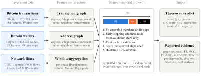
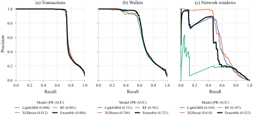
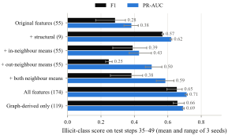
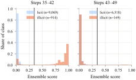
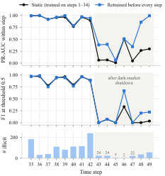

Abstract—Detectors of illicit activity are trained on the past and used on the future, yet they are often evaluated as if time did not matter. We study this gap with one protocol applied to three layers: Bitcoin transactions and wallets (Elliptic++) and network flows (a sample of UGR’16). Models are fitted on early time steps, tuned on later ones, and tested once on a still later period; an ensemble of gradient-boosted and bagged trees is compared with supervised and unsupervised references, and every result carries bootstrap intervals. On transactions the ensemble matches the best published result (illicit F1 0.829, 95% interval 0.811–0.850) but is statistically indistinguishable from a 50-tree Random Forest. On wallets, features derived from the address graph double F1 (0.357 to 0.710), and graph-derived features alone match all features; the gain survives when neighbourhoods are restricted to wallets that already exist. A published wallet baseline (F1 0.845) is not reproduced under any time-ordered split (0.25–0.39) but is approached under a random split (0.87), which we trace to per-address features repeated across rows and to strong label homophily. After a known market shutdown the transaction model’s F1 falls from 0.918 to 0.031; this is a ranking failure that no threshold repairs, whereas retraining restores ranking (PR-AUC 0.06 to 0.62) but leaves decisions at a fixed threshold poor. Isolation Forest scores illicit transactions as less anomalous than licit ones (ROC-AUC 0.17). The network layer is the weakest (F1 0.610) and is dominated by low-volume botnet traffic. We conclude that the split protocol, not the model family, determines the reported numbers, and that ranking and threshold failures must be reported separately.
Systems that flag illicit activity share an operating condition regardless of domain: they are trained on labelled history and applied to events that have not yet happened. Money launderers change their methods, markets open and close, and attack tools come and go, so the data on which a detector is judged in deployment is never an exchangeable sample of the data on which it was built. An evaluation that shuffles past and future together answers a different and easier question than the one an operator needs answered, and the security literature has documented repeatedly how much this inflates reported performance [1–3].
This paper examines the issue empirically in two domains that are usually studied apart. The first is the detection of illicit activity in Bitcoin, at the level of transactions and at the level of the wallets (addresses) behind them, using the Elliptic++ data set [4], an extension of the widely used Elliptic data set [5]. The second is the detection of attacks in network traffic, using NetFlow records from UGR’16 [6]. We call these three views layers. They share no entities and cannot be fused into one decision; what they share is the structure of the problem, and we exploit this by evaluating all three with a single protocol so that their behaviour can be compared.
Three gaps motivate the study.
Published wallet-level results lack a stated row protocol. Elliptic++ distributes wallet features with one row for each time step in which an address appears. We find that an address has identical feature values in all of its rows and that the file contains several hundred thousand exact duplicates (Section III-B). What a “time-step split” means for such a file is not defined by the data set paper, and different readings change the measured F1 by more than 0.5 (Section VI-D).
The value of graph information is contested. Results on Elliptic have swung between graph networks outperforming feature-based models and the reverse, with recent work attributing reported graph gains to leakage through test-period adjacency [7]. Whether simple, precomputed neighbourhood statistics help a tree ensemble, and whether the answer is the same for transactions and for wallets, has not been established under a leakage-controlled protocol.
Failure over time is reported, but rarely diagnosed. That models on Elliptic degrade after a dark-market shutdown is known since the data set was released [5]. Whether the loss lies in the ranking of entities or in the decision threshold, and which of the two retraining repairs, determines what an operator should do, and published accounts differ [8].
We keep the modelling deliberately conventional: an average of LightGBM, XGBoost and Random Forest models, with features derived from the transaction and address graphs or from per-source aggregation of network flows. The contribution lies in the evaluation. Models are fitted on early time steps, early stopping and thresholds are fixed on a later validation period, and the test period is touched once. Each result is accompanied by bootstrap intervals, by supervised and unsupervised reference models, by an in-pipeline reproduction of the strongest published baseline, and by targeted analyses that test specific explanations: feature-group ablations, causally restricted neighbourhoods, random against temporal splits, and static against periodically retrained models.
The study supports the following claims, each of which is qualified in the sections cited.
We do not propose a new learning algorithm and we do not claim state-of-the-art accuracy. Several of the findings are negative, and Section VII-C lists the limitations that bound all of them. The code, the configuration and the analysis scripts that generate every number in the paper accompany the manuscript.
Weber et al. [5] released the Elliptic data set, a graph of roughly 200 thousand Bitcoin transactions with 166 anonymised features, 234 thousand payment-flow edges and labels for about a quarter of the nodes, organised in 49 time steps. Their own comparison already contained the result that most later work has had to contend with: a Random Forest on node features outperformed a graph convolutional network, and every model degraded after a dark-market shutdown late in the timeline. Subsequent studies applied temporal graph networks [9], supervised learners [10], gradient boosting [11] and active learning under label scarcity [12] to the same data; broader surveys place this line of work in the context of anti-money-laundering analytics [13] and cryptocurrency network analysis [14].
Elmougy and Liu [4] extended the data set to Elliptic++ by adding 17 transaction features and, more importantly, an actor view: 822,942 wallet addresses with behavioural features, together with address-to-address and address-to-transaction edge lists. They report illicit-class F1 of 0.828 for transactions and 0.845 for wallets with a 50-tree Random Forest under a time-step split (steps 1–34 for training, 35–49 for testing). These figures are the natural reference point for our work and we return to them in Section VI-B.
Message-passing networks such as GCN [15] and GraphSAGE [16] aggregate neighbour information with learned weights. On tabular problems of moderate size, however, tree ensembles remain hard to beat [17][18], and on Elliptic the evidence for a graph advantage has weakened under stricter evaluation. In a recent re-evaluation, Maganti [7] reports that a Random Forest on raw features outperforms all tested graph networks under a strictly inductive protocol, attributes a large part of previously reported graph gains to training-time exposure to test-period adjacency, and finds that randomly rewired graphs can outperform the real one under temporal shift. Malik [19] compares transaction-level and actor-level review queues on Elliptic++ under a causal temporal protocol and observes, as we do independently, that actor features are constant across repeated appearances of an address.
Our study is complementary to both. We do not train a graph network; we ask how much a tree ensemble gains from precomputed neighbourhood statistics, which amounts to one mean-aggregation step without learned weights, and we ask this separately for the transaction graph and the address graph. We also test whether the gain survives when the neighbourhood is restricted to entities that already existed, which addresses the adjacency-exposure concern raised in [7].
A classifier deployed for security monitoring is trained on the past and applied to the future. Evaluations that ignore this ordering overstate performance; Pendlebury et al. [1] showed this for malware classification and formulated constraints for time-aware evaluation, and Arp et al. [2] list temporal snooping, inappropriate baselines and base-rate neglect among the recurring pitfalls of machine learning in security. Kapoor and Narayanan [3] document how leakage undermines reproducibility across scientific fields that use machine learning. Changes in the data-generating process after training are studied as concept drift [20] or, more generally, data-set shift [21]; evaluating a model that is updated as labels arrive is known as prequential evaluation [22], and fraud-detection work has stressed that labels arrive with delay [23].
For Bitcoin specifically, continual-learning approaches to anti-money-laundering have been reviewed by Deprez et al. [24], dynamic graph models have been evaluated around the shutdown event [25], and Bhatt and Sharma [8] argue from rolling evaluations that the dominant failure under non-stationarity is the miscalibration of decision thresholds, not the loss of predictive accuracy. Our results on the same event point the other way for a model with a fixed threshold (Section VI-E), and we discuss why the two observations are compatible.
Network intrusion detection has a long-standing gap between laboratory results and operational use [26][27], and a recurring criticism concerns the data sets [28]. UGR’16 [6] was built to address part of this: it contains anonymised NetFlow traces from a tier-3 Internet service provider, with a calibration period of real background traffic and a test period into which labelled attack traffic was injected. Its authors analyse it with multivariate statistical monitoring over counters derived from the flows [29]; Magán-Carrión et al. [30] use it to propose a methodology for comparing learning-based detectors; and Macko et al. [31] combine a supervised filter with an autoencoder on its flows. Its botnet class is labelled Neris, a botnet that is also documented in the CTU-13 collection of botnet captures [32]. We use a public sample of the first days of the test period only, which limits what our network layer can show; Section VII-C is explicit about this.
Because labels are scarce in both domains, unsupervised detectors are an attractive default [33][34]. We include Isolation Forest [35] as the unsupervised reference in every layer. Its behaviour on the transaction data turns out to be informative precisely because it fails.
All three layers are cast as the same task. Entities carry a feature vector , a discrete time index and a label (positive, negative, unlabelled). A detector outputs a score and a verdict. Given a cut-off time , only entities with and may be used to fit models or to choose any hyper-parameter or threshold; performance is measured on labelled entities with . Table I summarises the three data sets.
| Fit | Validation | Test | |||||||
| Layer | Entity | Entities | Unlabelled | Labelled | Positive | Labelled | Positive | Labelled | Positive |
| Transactions | transaction | 203,769 | 157,205 | 26,381 | 2,871 (10.9%) | 3,513 | 591 (16.8%) | 16,670 | 1,083 (6.5%) |
| Wallets | address | 822,942 | 557,588 | 152,613 | 7,624 (5.0%) | 20,290 | 1,753 (8.6%) | 92,451 | 4,889 (5.3%) |
| Network | source IP minute | 2,420,698 | 11,264 | 1,540,275 | 3,745 (0.24%) | 542,303 | 872 (0.16%) | 326,856 | 769 (0.24%) |
The transaction view of Elliptic++ [4] contains the 203,769 transactions of the Elliptic data set [5], each with a time step from 1 to 49, 93 local and 72 aggregated anonymised features inherited from Elliptic, and 17 additional features (182 in total besides the time step). There are 234,355 directed edges that represent a flow of bitcoin from one transaction to the next. Labels mark 4,545 transactions as illicit and 42,019 as licit; the remaining 77% are unknown. Every edge connects two transactions of the same time step, so the graph is a union of 49 disjoint per-step graphs.
The actor view lists 822,942 addresses, of which 14,266 are labelled illicit and 251,088 licit. The released feature file has 1,268,260 rows, one for each time step in which an address appears, and 55 feature columns besides the address and the time step. Two properties of this file matter for evaluation and are, to our knowledge, not stated in the data-set paper:
A consequence is that a row-level split on the time step places the same address, with the same feature vector and the same label, on both sides of the split whenever the address is active in both periods. We therefore define the wallet task with one row per address and assign each address to the time step of its first appearance, , so that no test wallet has been seen in training. We also run the row-per-appearance variant for comparison. The address-to-address edge list contains 2,868,964 rows; after removing self-loops and duplicates, 2,775,637 directed edges connect the addresses.
The first property also implies a limitation that no split can remove: the feature vector of a wallet contains information from after its first appearance. We quantify the exposure in Section VI-C and list it among the threats to validity.
UGR’16 [6] provides NetFlow records with an end timestamp, duration, source and destination address and port, protocol, TCP flags, packet and byte counts, and a label. We use a publicly redistributed sample of 5,000,000 flows [36] that covers 27–31 July 2016, the first days of the test period. The sample is published without documentation of how its flows were selected. It contains 4,931,787 background flows and 68,213 labelled flows: 27,419 dos, 13,025 scan44, 2,804 scan11, 6,234 nerisbotnet, 4,961 anomaly-spam and 13,770 blacklist. At roughly one million flows per day for the network of an Internet service provider, the file can only be a subsample of the traffic of those days, so each host’s activity is observed in part. Attack labels other than anomaly-spam first appear on 28 July.
Fig. 1 gives an overview. The three layers differ only in how features are constructed; the learning and evaluation protocol is shared, which is what makes the layers comparable.

Let be the directed transaction graph or address graph, its adjacency matrix with if , and , the in- and out-neighbours of node . Missing feature values are replaced by medians computed on the training period. Each node is then described by
where the neighbourhood means are
and is defined analogously over . A node without neighbours in a direction receives a missing value for that block, which the tree learners treat as a category of its own. The vector holds nine structural descriptors: in-degree , out-degree , their sum , the ratio , the two-hop walk counts and , the mean total degree of in- and of out-neighbours, and with the size of the weakly connected component of . This yields features: 555 for transactions () and 174 for wallets ().
Equation (2) is the mean aggregator of GraphSAGE [16] applied once, without learned weights and computed before training. Only features are propagated. Labels of neighbours are never used as inputs, because at decision time the labels of contemporaneous entities are unknown.
and likewise for out-neighbours.
A single flow record carries little evidence, and attack behaviour such as scanning is a property of many flows from one origin. Flows are therefore grouped by source address and by consecutive windows of seconds, and each non-empty group becomes one entity. Its 32 features describe volume (flows, packets, bytes, their ratios, mean and maximum duration), fan-out (numbers of distinct destination addresses, destination ports and source ports, and their ratios to the flow count), protocol shares (TCP, UDP, ICMP), TCP-flag shares (SYN, SYN without ACK, RST, FIN), port usage (shares of flows to ports 22, 23, 25, 53, 80, 443 and to ports below 1024), the share of single-packet flows, and the hour of day. A window is positive if it contains at least one flow labelled as an attack. Windows whose only non-background flows are labelled blacklist are excluded from training and evaluation, because that label marks membership of an address in a blacklist and not observed behaviour; they are still scored.
The stream is read in chunks, so the raw file is never held in memory. All positive windows are kept; background windows may be retained with probability to bound memory. With , recall and the false-positive rate are unaffected in expectation, but precision is inflated. We then also report
which rescales false positives to the full background. The main network experiment uses ; a run with is reported in Section VI-H to show how the sampling rate affects the operating point.
The detector averages the scores of three tree learners, each trained with several random seeds:
with = {LightGBM [37], XGBoost [38], Random Forest [39]} and the estimated probability of the positive class from learner with seed . Averaging was chosen over stacking because a meta-learner would need a further held-out period, and the available validation periods are short.
Let split the training period into a fit part () and a validation part (). The protocol has four stages.
and the review threshold is the largest threshold that still retrieves a fraction of the validation positives, capped by :
The positive verdict is the binary decision on which precision, recall and F1 are computed. The suspicious band is intended as a queue for manual review. Nothing computed on influences a model, a threshold or a reported configuration.
Three references are trained under the same protocol on the original features only: (i) logistic regression on quantile-normalised features with balanced class weights; (ii) Isolation Forest [35], fitted on the negative class of the training period and therefore unsupervised with respect to the positive class; and (iii) a Random Forest with 50 trees and default settings, the strongest model of [4], evaluated at the conventional threshold of 0.5. Reference (iii) serves as an in-pipeline reproduction of the published baseline.
We report precision, recall and F1 of the positive class, the false-positive rate, the Matthews correlation coefficient [40], and the threshold-free areas under the precision–recall and ROC curves. Under class imbalance the precision–recall view is the more informative of the two [41][42]. Confidence intervals are 95% percentile bootstrap intervals [43] from 500 resamples of the test set; they express sampling variability of the test set given the trained models. Variability due to training randomness is reported separately as the spread over seeds. To separate ranking quality from threshold transfer we also compute the oracle F1, the maximum F1 attainable on the test set by any threshold, which is an upper bound and not an achievable result.
The experiments are organised around six questions.
Table II lists the settings, which were fixed before the test period was evaluated and are identical across layers unless stated. No hyper-parameter search was run; the values are conventional defaults for tabular data of this size. For transactions and wallets we follow the split of prior work [4][5], training on time steps 1–34 and testing on 35–49, and reserve steps 30–34 for validation. For the network layer the first three days are used for fitting, the fourth for validation and the fifth for testing.
| Component | Setting |
| LightGBM | learning rate 0.05, 63 leaves, row subsample 0.8, column subsample 0.4, |
| XGBoost | histogram trees, learning rate 0.05, depth 8, row subsample 0.8, column subsample 0.4, |
| Early stopping | validation PR-AUC, patience 150, at most 2000 rounds |
| Random Forest | 600 trees (300 for wallets and network), features per split, balanced subsample weights |
| Seeds | 3 per learner for transactions; 2 for wallets and network (1 for their Random Forest) |
| Logistic regression | quantile transform to normal, , balanced weights |
| Isolation Forest | 300 trees, 4096 samples per tree, licit or benign training rows only |
| Published baseline | Random Forest, 50 trees, defaults, threshold 0.5 |
| Imputation | training-period medians |
| Bootstrap | 500 resamples of the test set |
Beyond the main runs, the following analyses were designed to probe specific explanations. Each uses a single LightGBM model with the settings of Table II unless stated, so that differences are attributable to the factor under study and not to ensembling.
The pipeline is implemented in Python with scikit-learn, LightGBM and XGBoost and runs on a laptop CPU with 16 GB of memory; no GPU is used. The Elliptic++ experiments take between 8 and 17 minutes per configuration and the network experiment on all 2.4 million windows takes 63 minutes. Every table and figure in this paper is generated from files written by the released scripts, and the commands that reproduce them are listed in the repository.
Table III reports all models on the test periods and Fig. 2 shows the precision–recall curves of the ensemble and its members.
| Layer | Model | Precision | Recall | F1 | MCC | PR-AUC | ROC-AUC |
| Transactions | Logistic regression | 0.895 | 0.519 | 0.657 | 0.666 | 0.718 | 0.894 |
| Isolation Forest (unsupervised) | 0.064 | 0.989 | 0.121 | 0.086 | 0.036 | 0.168 | |
| Random Forest, 50 trees [4] | 0.959 | 0.719 | 0.822 | 0.821 | 0.783 | 0.913 | |
| LightGBM | 0.952 | 0.731 | 0.827 | 0.825 | 0.808 | 0.938 | |
| XGBoost | 0.885 | 0.734 | 0.803 | 0.794 | 0.812 | 0.945 | |
| Random Forest | 0.961 | 0.714 | 0.819 | 0.819 | 0.801 | 0.941 | |
| Ensemble | 0.961 | 0.729 | 0.829 | 0.828 | 0.806 | 0.942 | |
| [0.947, 0.974] | [0.704, 0.758] | [0.811, 0.850] | [0.811, 0.848] | [0.783, 0.827] | [0.935, 0.949] | ||
| Wallets | Logistic regression | 0.354 | 0.403 | 0.376 | 0.340 | 0.264 | 0.810 |
| Isolation Forest (unsupervised) | 0.055 | 0.948 | 0.104 | 0.032 | 0.061 | 0.552 | |
| Random Forest, 50 trees [4] | 0.381 | 0.187 | 0.250 | 0.239 | 0.298 | 0.856 | |
| LightGBM | 0.957 | 0.560 | 0.707 | 0.722 | 0.721 | 0.937 | |
| XGBoost | 0.928 | 0.502 | 0.651 | 0.671 | 0.704 | 0.934 | |
| Random Forest | 0.940 | 0.519 | 0.669 | 0.687 | 0.701 | 0.933 | |
| Ensemble | 0.908 | 0.583 | 0.710 | 0.716 | 0.721 | 0.937 | |
| [0.898, 0.917] | [0.570, 0.596] | [0.699, 0.721] | [0.706, 0.726] | [0.709, 0.730] | [0.934, 0.940] | ||
| Network | Logistic regression | 0.080 | 0.520 | 0.139 | 0.200 | 0.072 | 0.931 |
| Isolation Forest (unsupervised) | 0.214 | 0.073 | 0.109 | 0.124 | 0.045 | 0.836 | |
| Random Forest, 50 trees | 0.836 | 0.139 | 0.239 | 0.341 | 0.751 | 0.959 | |
| LightGBM | 0.671 | 0.549 | 0.604 | 0.606 | 0.554 | 0.975 | |
| XGBoost | 0.836 | 0.492 | 0.619 | 0.641 | 0.618 | 0.972 | |
| Random Forest | 0.253 | 0.124 | 0.166 | 0.175 | 0.187 | 0.972 | |
| Ensemble | 0.886 | 0.466 | 0.610 | 0.642 | 0.522 | 0.976 | |
| [0.855, 0.918] | [0.431, 0.501] | [0.575, 0.643] | [0.611, 0.671] | [0.491, 0.551] | [0.969, 0.982] |

Three observations follow. First, precision is high and recall is the limiting factor in every layer: the ensemble is rarely wrong when it flags an entity (precision 0.96, 0.91 and 0.89) but misses 27%, 42% and 53% of the positives. Second, the ensemble is not uniformly the best model. It has the highest F1 for transactions and wallets, by small margins over LightGBM, and for network windows it is slightly below XGBoost in F1 and clearly below it in PR-AUC. Averaging protects against a weak member only if no member is very weak; the network Random Forest (PR-AUC 0.187) is, and it lowers the average. Third, the plain 50-tree Random Forest behaves very differently across layers: it is nearly as good as the ensemble on transactions, far worse on wallets, and on network windows it has the best PR-AUC of all models (0.751) while its fixed threshold of 0.5 yields a recall of 0.14.
Table IV sets our numbers beside those of Elmougy and Liu [4], who use the same train and test time steps.
| Model | Precision | Recall | F1 |
| Transactions | |||
| Published RF [4] | 0.975 | 0.719 | 0.828 |
| Published XGBoost [4] | 0.793 | 0.718 | 0.754 |
| Published RF+MLP+XGB [4] | 0.962 | 0.723 | 0.826 |
| Reproduced RF (ours) | 0.959 | 0.719 | 0.822 |
| Ensemble (ours) | 0.961 | 0.729 | 0.829 |
| Wallets | |||
| Published RF [4] | 0.911 | 0.789 | 0.845 |
| Published XGBoost [4] | 0.869 | 0.534 | 0.662 |
| Published RF+MLP+XGB [4] | 0.933 | 0.572 | 0.709 |
| Reproduced RF, one row per wallet | 0.381 | 0.187 | 0.250 |
| Reproduced RF, rows as distributed | 0.525 | 0.306 | 0.387 |
| Ensemble (ours), one row per wallet | 0.908 | 0.583 | 0.710 |
| Ensemble (ours), row per appearance | 0.909 | 0.573 | 0.702 |
Transactions. The published Random Forest is reproduced closely (F1 0.822 against 0.828; identical recall). Our ensemble reaches 0.829. A paired bootstrap on the test set gives a difference between the ensemble and the reproduced forest of F1 with a 95% interval of ; the two models disagree on 56 of 16,670 test transactions. We therefore claim parity with the best published result, not an improvement.
Wallets. The published wallet result is not reproduced under any time-ordered split that we tried. The same model configuration yields F1 0.250 with one row per wallet and 0.387 on the rows as distributed, against the published 0.845. Section VI-D shows that a random split of the same data gives values close to the published one. Within our protocol the ensemble reaches 0.710, close to the published three-model ensemble (0.709), but since the single-model figures cannot be reconciled we do not regard the two as measurements of the same task.
| Layer | Features | Prec. | Recall | F1 | PR-AUC |
| Transactions | original (182) | 0.911 | 0.731 | 0.811 | 0.800 |
| with graph (555) | 0.961 | 0.729 | 0.829 | 0.806 | |
| Wallets | original (55) | 0.634 | 0.249 | 0.357 | 0.426 |
| with graph (174) | 0.908 | 0.583 | 0.710 | 0.721 |

Table V shows the central asymmetry of this study. At the transaction level, graph-derived features change little: F1 rises by 0.018, entirely through fewer false positives (77 to 32), and PR-AUC by 0.006. At the wallet level they double F1 (0.357 to 0.710) and raise PR-AUC from 0.426 to 0.721.
| Tx graph | Address graph | |
| Edges with both ends labelled | 36,624 | 1,091,809 |
| Illicit base rate, labelled nodes | 0.098 | 0.054 |
| P(nbr. illicit node illicit) | 0.541 | 0.764 |
| P(nbr. illicit node licit) | 0.024 | 0.004 |
| Rows | Model | Temporal | Random | Gap |
| F1 | F1 | |||
| Transactions | RF-50, original | 0.822 | 0.939 | +0.117 |
| LightGBM, all | 0.829 | 0.957 | +0.128 | |
| Wallets, 1 row each | RF-50, original | 0.250 | 0.869 | +0.619 |
| LightGBM, all | 0.599 | 0.906 | +0.307 | |
| Wallets, as distrib. | RF-50, orig.+step | 0.387 | 0.955 | +0.568 |
Table VII repeats the same models under a stratified random 70/30 split. For transactions a random split adds about 0.12 F1. For wallets the effect is far larger: the 50-tree Random Forest moves from 0.250 to 0.869 with one row per wallet and to 0.955 on the rows as distributed, where a third of the test rows have a twin with identical features and label in the training part.
Two points deserve emphasis. First, the published wallet figure (precision 0.911, recall 0.789, F1 0.845) lies close to our random-split result with one row per wallet (0.965, 0.790, 0.869) and far from every temporal result. We cannot determine from the paper how its rows were assigned, and we do not claim that a random split was used; the observation is only that we can approach the published value with a split that is not time-ordered and cannot with one that is. Second, the gap is not specific to duplicated rows. Even with one row per wallet, random assignment mixes wallets of the same time step, and often of the same transaction, across the two sides, and the homophily documented in Table VI makes such neighbours near-copies of one another. A random split therefore measures interpolation within an episode of activity, while a temporal split measures transfer to later episodes; only the latter corresponds to deployment [1][2].


| Layer | Steps | Model | F1 | PR-AUC | ROC | Oracle |
| Transact. | 35–42 | static | 0.917 | 0.924 | 0.975 | 0.918 |
| retrained | 0.911 | 0.939 | 0.984 | 0.920 | ||
| 43–49 | static | 0.032 | 0.062 | 0.766 | 0.115 | |
| retrained | 0.140 | 0.616 | 0.967 | 0.650 | ||
| Wallets | 35–42 | static | 0.773 | 0.833 | 0.962 | 0.801 |
| retrained | 0.742 | 0.849 | 0.961 | 0.817 | ||
| 43–49 | static | 0.289 | 0.504 | 0.910 | 0.528 | |
| retrained | 0.469 | 0.605 | 0.955 | 0.543 |
This reconciles our observation with that of Bhatt and Sharma [8], who attribute losses under non-stationarity to miscalibrated decision rules. Both mechanisms occur, in sequence: a model that is never updated loses the ranking itself, and a model that is updated recovers the ranking but needs its threshold re-estimated. Reporting only a threshold metric would hide the recovery, and reporting only a ranking metric would hide that decisions remain poor.
Isolation Forest, fitted on licit training transactions, attains a ROC-AUC of 0.168 on the test period, well below chance. The inversion is systematic: it is 0.107 on the labelled training period and 0.110 on steps 35–42, and returns to chance (0.483) after the shutdown. Illicit transactions are, by the isolation criterion, more typical than licit ones, so that in this data “illicit” and “anomalous” are different properties before step 43 and unrelated ones after it. On wallets the detector is at chance (0.552); on network windows it has some ranking ability (0.836) but poor precision (PR-AUC 0.045 at a prevalence of 0.0024). Label-free detection is not a workable substitute for supervision in any of the three layers, and in the transaction layer its sign could not even be determined without labels.
| Transact. | Wallets | Network | |
| Decision threshold | 0.344 | 0.307 | 0.326 |
| Review threshold | 0.344 | 0.122 | 0.011 |
| F1 achieved | 0.829 | 0.710 | 0.610 |
| Oracle F1 | 0.833 | 0.711 | 0.612 |
| Share with positive verdict | 4.9% | 3.4% | 0.12% |
| Share with suspicious verdict | 0% | 5.4% | 3.6% |
| Recall, positive verdict | 0.729 | 0.583 | 0.466 |
| Recall, positive or suspicious | 0.729 | 0.694 | 0.923 |
| Precision within suspicious band | – | 0.108 | 0.030 |
| Expected calibration error | 0.010 | 0.020 | 0.002 |
| Brier score | 0.019 | 0.027 | 0.002 |
For the ensemble, validation-selected thresholds transfer well: the loss against the best test threshold is at most 0.003 F1 (Table IX). This does not hold for individual models. Single members lose up to 0.03 (transaction XGBoost) and 0.14 (network Random Forest), and one LightGBM seed of the network layer reaches F1 0.21 where the other reaches 0.63 with nearly the same ranking quality. The wallet ensemble without graph features loses 0.10. Threshold selection on a short validation period is therefore a source of variance of its own, which averaging over models and seeds reduces. Early stopping shows the same sensitivity: the two XGBoost seeds of the network layer stop after 114 and 645 rounds.
The three-way verdict behaves differently in each layer. For transactions the band is empty, since the F1-optimal threshold already retrieves 95% of validation positives, and the verdict degenerates to a binary one; the validation period, with an F1 of 0.975, is simply much easier than the test period and gives no warning of the 27% of illicit transactions that are missed. For wallets, reviewing a further 5.4% of entities raises recall from 0.58 to 0.69 at a precision of 11% within the band. For network windows the band is most useful: 3.6% of windows contain almost all remaining attacks, raising recall from 0.47 to 0.92, at a precision of 3%. Whether such a queue is affordable depends on the review capacity, which our data cannot determine.
| Attack label | Windows | Positive | Pos. or susp. |
| Botnet (nerisbotnet) | 666 | 39.5% | 91.3% |
| Denial of service (dos) | 72 | 100% | 100% |
| Port scan (scan44) | 24 | 79.2% | 95.8% |
| Port scan (scan11) | 7 | 57.1% | 100% |
The protocol carries over without change, and the outcome is the weakest of the three layers (F1 0.610, PR-AUC 0.522). Table X shows that the result is dominated by one attack type. Botnet windows are 87% of the test positives and only 39.5% of them receive a positive verdict, whereas all denial-of-service windows are detected. High-volume attacks are visible in per-minute aggregates of a single source; botnet communication is low-volume and, in a sample of the traffic, a botnet host contributes only a few flows to a window. The ROC-AUC of 0.976 is uninformative here: at a prevalence of 0.24%, a false-positive rate of 1% already means four false alarms for every attack window.
Two further results qualify the network layer. The default 50-tree Random Forest ranks better than the ensemble (PR-AUC 0.751 against 0.522), which indicates that the class re-weighting and regularisation that suit the Elliptic++ layers are not appropriate at this much lower prevalence; we report the configuration as specified in advance and did not tune it on the test day. And when background windows are down-sampled to one quarter during training and evaluation, the selected operating point changes markedly (threshold 0.186, false-positive rate 0.21% instead of 0.014%), giving a recall of 0.547 and a precision of 0.715 on the sample, which (4) corrects to 0.385. The detector’s decisions are thus sensitive to the class ratio it is trained at, and precision measured on down-sampled background must not be quoted without correction.
The evaluation protocol outweighs the model. Across our experiments, the choice among LightGBM, XGBoost, Random Forest and their average moves illicit F1 by a few hundredths. The choice between a temporal and a random split moves it by 0.12 for transactions and by 0.3 to 0.6 for wallets (Table VII). A reader comparing two papers on these data should therefore first ask how rows were assigned to training and test, and only then which model was used. For wallet-level data in particular, a result is not interpretable unless the paper states what a row is, whether an address can occur on both sides of the split, and whether features are computed per appearance or per address.
Graph information helps where neighbours carry the label. The wallet result is the one substantive modelling finding. It required no graph neural network: one step of unweighted neighbour averaging plus a handful of degree statistics, fed to a tree ensemble, accounts for the improvement, and the same construction does almost nothing for transactions. The difference follows from properties of the data that can be checked in advance, namely whether the base features already encode neighbourhoods and how strongly labels cluster along edges (Table VI). We regard this as a practical suggestion for similar problems: measure label homophily on the training period before investing in graph models. Our finding is compatible with reports that graph networks do not beat feature baselines on Elliptic transactions [5][7]; it adds that the conclusion should not be carried over to the wallet level without testing.
Static detectors have a shelf life, and the remedy has two parts. The shutdown at step 43 is a single event in a single data set, and we do not generalise its magnitude. Its anatomy is nevertheless instructive. Before the event the model was excellent by every measure, and nothing in its validation performance warned of what followed. Afterwards the failure was complete and was a failure of ranking. Retraining with recent labels repaired the ranking within a few steps but left the fixed decision threshold wrong. An operational system therefore needs both periodic retraining and periodic re-estimation of thresholds, and it needs monitoring that reports a ranking metric and a decision metric side by side; either alone gives a misleading picture (Section VI-E).
Unsupervised scores need labels to be trusted. The Isolation Forest result is a caution against treating “anomaly detection” as synonymous with “detection of illicit activity”. In the transaction data the unsupervised score was strongly and stably anti-correlated with the label, a fact that is only discoverable with labels.
Four results ran against our expectations and are reported as such. (i) Graph-derived features alone matched the full feature set for wallets, which means that the released per-wallet features add little once neighbourhood structure is known. (ii) The ensemble was not the best model in the network layer, where a default Random Forest out-ranked it. (iii) The three-way verdict collapsed to two classes for transactions, because validation data were too easy to place a review threshold below the decision threshold. (iv) A domain classifier could separate any two periods perfectly, including periods inside the training set, which invalidated it as a drift diagnostic and revealed that the anonymised features encode time.
The prequential analysis assumes that labels arrive immediately, whereas in practice confirmation of illicit activity takes time [23]; repeating it with realistic delays is the most direct extension. Thresholds could be re-estimated on a sliding validation window, and probabilities recalibrated after each retraining [45]. The network configuration should be revisited for very low prevalence and evaluated on complete weeks of UGR’16 with a test week separate from the training week. Finally, the wallet finding invites a comparison with learned graph models under the causal-neighbourhood protocol used here.
We evaluated illicit-activity detectors for Bitcoin transactions, Bitcoin wallets and network flows under one leakage-controlled temporal protocol. The modelling is ordinary; the findings concern what a careful evaluation reveals. On transactions, a tuned ensemble equals but does not exceed a default Random Forest. On wallets, simple graph-derived features double the F1 score, and a prominent published baseline cannot be reproduced under time-ordered splits while a random split approaches it. Over time, a static model fails completely after a regime change, by ranking; retraining restores the ranking and leaves the threshold to be fixed. Unsupervised detection fails in all three layers. Network-flow detection on the available sample is weak and dominated by one attack type. The practical lessons are to state the unit and ordering of a split before any score, to measure label homophily before choosing a graph method, and to monitor ranking and decision quality separately once a detector is deployed.
All experiments are run by scripts in the accompanying repository. run_all.py executes the six main configurations and writes metrics, tables, figures and per-entity verdicts to outputs/. The scripts in paper/analysis/ produce the supplementary analyses and the figures of this paper from those outputs. Random seeds are fixed (base seed 42). The data are public: Elliptic++ at https://github.com/git-disl/EllipticPlusPlus and the UGR’16 sample at the address given in [36].